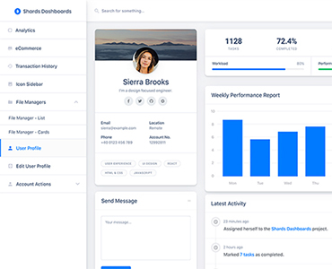

Automated printing calculations for your business.
Print Links automates the underlying calculation process while keeping the owner's workflow simple. Enter quantity and required details, and Print Links handles the rest. No more manual calculations, no more errors.
Whether you are calculating printing costs, job quantities, or material requirements, Print Links ensures accuracy and efficiency every time.
Print Links simplifies the entire printing calculation process. The owner enters the required information, while Print Links handles the calculations, processing and business insights behind the scenes. Less manual work. Better visibility. Smarter printing-business management.
From printing calculations and client management to pricing, items, expenses, employees, salaries, holidays, suppliers, daily earnings, daily profit, analytics and reports - Print Links brings the essential parts of a printing business into one organized system.

Organize pricing according to business requirements rather than manual calculations. Manage clients, suppliers, employees, salaries, holidays, and expenses from one centralized place. Track daily earnings, daily expenses, and daily profit seamlessly.